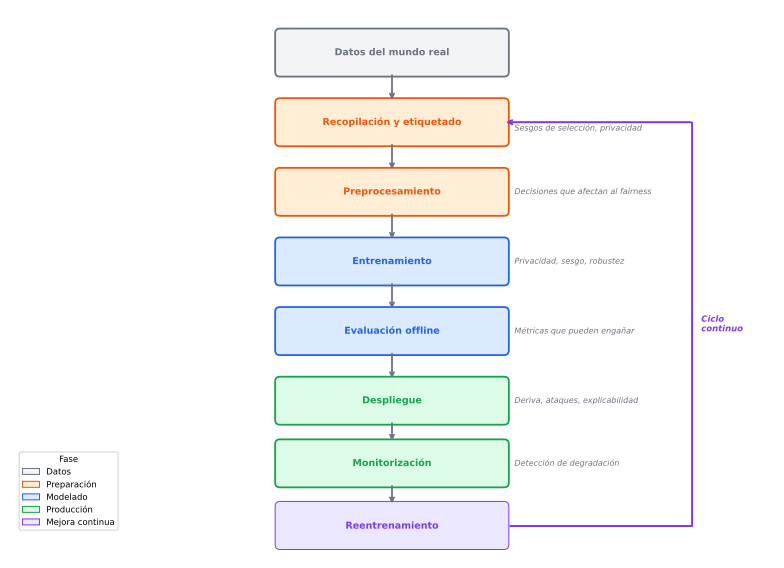
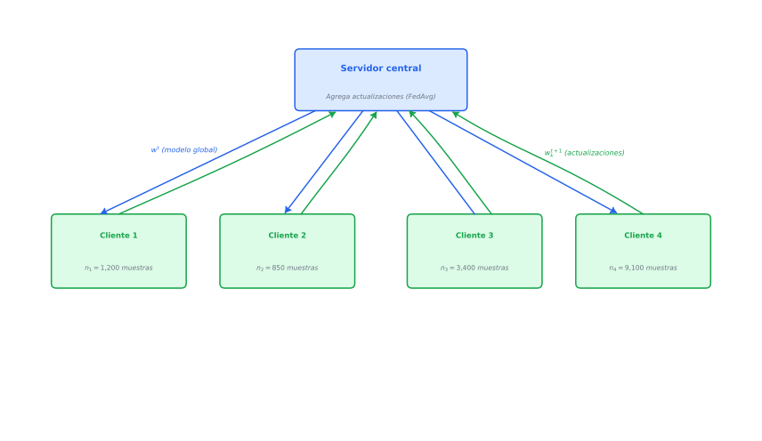
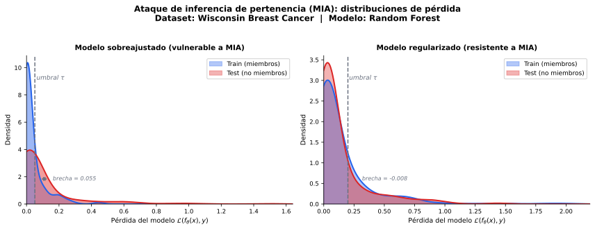
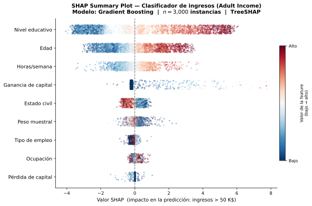
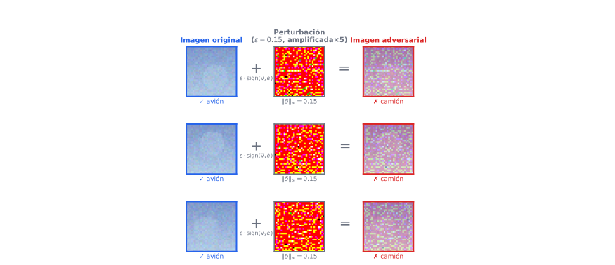
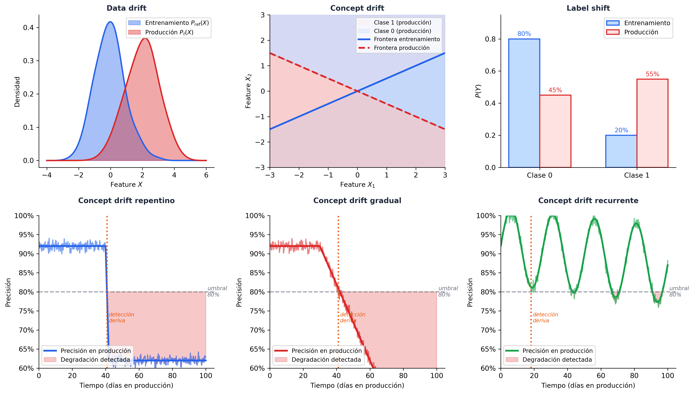
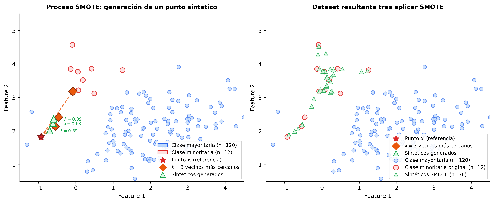

Aprendizaje Automático en Problemas del Mundo Real¶
A lo largo de la asignatura hemos estudiado algoritmos de ML bajo el supuesto de que disponemos de un dataset limpio, estático y representativo, lo entrenamos, lo evaluamos y reportamos métricas. Este modelo de trabajo es útil para aprender los fundamentos, pero es una simplificación que omite casi todo lo que hace difícil el ML en la práctica.
Cuando un sistema de ML se despliega en el mundo real, enfrenta al menos cinco problemas que no aparecen en nuestros datasets de prueba:
- Los datos son privados o sensibles y no pueden centralizarse libremente.
- Los datos reflejan sesgos históricos que el modelo puede amplificar.
- El modelo es una caja negra y las decisiones que toma afectan a personas reales.
- El mundo cambia y la distribución de los datos en producción difiere de la del entrenamiento.
- Los atacantes pueden manipular las entradas para engañar al modelo.
En producción, el ML no es un proyecto con inicio y fin, sino un ciclo continuo, como se muestra en la Figura 1. Cada paso en este diagrama es un punto donde algo puede salir mal, y en el que nos podremos encontrar problemas como los indicados anteriormente.
{kind=link}

Este tema revisa cada uno de estos problemas, las herramientas matemáticas y computacionales que la comunidad ha desarrollado para tratarlos, y el marco legal que en Europa obliga a tenerlos en cuenta.
Marco Legal y Ético¶
El Reglamento General de Protección de Datos (RGPD)¶
El RGPD (Reglamento (UE) 2016/679 Del Parlamento Europeo y Del Consejo Relativo a La Protección de Las Personas Físicas En Lo Que Respecta Al Tratamiento de Datos Personales (RGPD), 2016)1, en vigor desde 2018, es el marco legal principal que afecta al ML en Europa. Sus implicaciones para los sistemas de aprendizaje automático son directas y no opcionales.
En el Art. 5 se establecen los principios relativos al tratamiento que tienen un significativo impacto en su uso en ML:
- Limitación de la finalidad: Los datos recogidos para un propósito no pueden usarse para entrenar un modelo con un propósito distinto.
- Minimización de datos: Solo se pueden recopilar los datos estrictamente necesarios para el fin declarado. Esto limita la posibilidad de recopilar datos "por si acaso" para entrenar modelos.
- Exactitud: Los datos deben ser correctos y estar actualizados, lo que tiene implicaciones para el mantenimiento de los datasets de entrenamiento.
- Limitación del plazo de conservación: Los datos no pueden guardarse indefinidamente, por lo que los modelos entrenados con datos que ya no pueden conservarse legalmente plantean preguntas sobre el "derecho al olvido" en ML.
- Integridad y confidencialidad: Los datos deben ser tratados de forma que se garantice su seguridad, lo cual tendrá implicaciones en la privacidad de los modelos entrenados.
El derecho a explicación (Art. 22): Cuando una decisión automatizada afecta significativamente a una persona (concesión de crédito, contratación, diagnóstico médico), el interesado tiene derecho a "a no ser objeto de una decisión basada únicamente en el tratamiento automatizado" y, según se indica en el Art. 13, a obtener "información significativa sobre la lógica aplicada". Esto hace que la explicabilidad no sea solo una buena práctica sino una obligación legal. Los modelos de caja negra como las redes neuronales profundas o los ensembles son problemáticos en estos contextos sin herramientas de XAI adicionales.
El Reglamento de Inteligencia Artificial de la UE (AI Act)¶
El AI Act (Reglamento (UE) 2024/1689 Del Parlamento Europeo y Del Consejo Por El Que Se Establecen Normas Armonizadas En Materia de Inteligencia Artificial (AI Act), 2024)2, publicado en 2024, es el primer marco regulatorio integral sobre IA del mundo. Clasifica los sistemas de IA en cuatro categorías de riesgo:
Riesgo inaceptable (prohibidos)
- Sistemas de puntuación social por parte de gobiernos.
- Manipulación subliminal del comportamiento.
- Reconocimiento facial en tiempo real en espacios públicos (con excepciones muy limitadas).
Alto riesgo (regulados con obligaciones estrictas)
Esta categoría incluye la mayoría de aplicaciones ML de impacto real: infraestructura crítica, educación, empleo, crédito, acceso a servicios públicos, justicia penal y gestión de fronteras. Los sistemas de alto riesgo deben cumplir requisitos de gestión de riesgos, calidad de datos (datasets sin sesgos relevantes), transparencia y explicabilidad, supervisión humana, robustez y exactitud. Deben registrarse y someterse a evaluaciones de conformidad.
Riesgo limitado
Sistemas con obligaciones de transparencia (como por ejemplo los chatbots, que deben identificarse como IA). La principal obligación en este grupo de riesgo es al menos informar al usuario.
Riesgo mínimo
La mayoría de aplicaciones (como por ejemplo filtros de spam, recomendadores de contenido, videojuegos).
La implicación práctica para el desarrollo de ML es que cualquier sistema que se pretenda desplegar en categorías de alto riesgo debe diseñarse desde el principio con estos requisitos en mente, no como una capa añadida al final. Esto implica documentación exhaustiva de los datos de entrenamiento, trazabilidad de las decisiones del modelo, y capacidad de auditoría.
Ética más allá de la ley¶
El cumplimiento legal es un mínimo, pero podemos ir más allá. La comunidad de ML ha desarrollado marcos éticos más amplios. Los más influyentes son los principios de IA de la OCDE (beneficio para las personas y el planeta, valores centrados en el ser humano, transparencia, robustez y rendición de cuentas) y las directrices de IA fiable de la Comisión Europea (agencia y supervisión humanas, solidez técnica y seguridad, privacidad y gobernanza de datos, transparencia, diversidad y no discriminación, bienestar social y medioambiental, y rendición de cuentas).
Estos marcos no tienen fuerza legal directa pero orientan la práctica del sector y están siendo progresivamente incorporados a la regulación.
Privacidad¶
El problema de la centralización de datos¶
El paradigma clásico del ML asume que todos los datos de entrenamiento están disponibles en un único servidor. Esto es incompatible con muchos dominios reales:
- Salud: Los historiales clínicos de diferentes hospitales no pueden compartirse por regulación (RGPD, HIPAA en EEUU). Sin embargo, un modelo entrenado sobre datos de múltiples hospitales sería mucho más potente que uno entrenado en un solo centro.
- Banca y finanzas: Los datos de transacciones son sensibles y los bancos no pueden compartirlos entre sí, aunque colaborar mejoraría los modelos de detección de fraude.
- Dispositivos móviles: Los teclados predictivos o asistentes de voz aprenden de lo que el usuario escribe o dice, datos que son extremadamente privados.
Existen dos grandes enfoques complementarios para entrenar modelos con garantías de privacidad: el aprendizaje federado y la privacidad diferencial.
Federated Learning (FL)¶
Motivación¶
El aprendizaje federado fue introducido por Google en 2017 en el contexto de Gboard (Hard et al., 2018)3, su teclado predictivo para móvil, donde el texto escrito por cada usuario es demasiado sensible para enviarse a servidores centrales. Este enfoque invierte el paradigma clásico, y en lugar de llevar los datos al modelo, llevamos el modelo a los datos.
En FL, existe un servidor central que coordina el entrenamiento y \(K\) clientes (hospitales, bancos, dispositivos móviles) que tienen datos locales que nunca salen de su entorno (ver Figura 2). El proceso es iterativo:
- El servidor envía el modelo global actual \(w^t\) a un subconjunto de clientes.
- Cada cliente \(k\) entrena el modelo localmente sobre sus datos \(\mathcal{D}_k\) durante \(E\) épocas locales, obteniendo una actualización \(w_k^{t+1}\).
- Los clientes envían sus actualizaciones (gradientes o pesos) al servidor.
- El servidor agrega las actualizaciones para obtener el nuevo modelo global \(w^{t+1}\).
{kind=link}

FedAvg¶
El algoritmo FedAvg (McMahan et al., 2017)4 es el punto de partida de la mayoría de métodos de FL. La agregación en el servidor se realiza como una media ponderada por el tamaño del dataset local:
donde \(n_k = |\mathcal{D}_k|\) es el número de ejemplos del cliente \(k\) y \(n = \sum_k n_k\) el total.
La actualización local de cada cliente minimiza su pérdida local mediante SGD, con la siguiente actualización en cada paso del entrenamiento:
donde \(\mathcal{L}_k\) es la función de pérdida evaluada sobre \(\mathcal{D}_k\).
El problema de los datos no-IID¶
El supuesto implícito de FedAvg es que los datos locales son representativos de la distribución global. En la práctica, los datos de cada cliente son heterogéneos (non-IID). Por ejemplo, el hospital A puede tener principalmente pacientes diabéticos mientras que el B tiene principalmente cardíacos. Esta heterogeneidad causa client drift: el modelo local de cada cliente se aleja del óptimo global durante el entrenamiento local, lo que degrada la convergencia.
FedProx (Li et al., 2020)5 aborda esto añadiendo un término de regularización proximal a la pérdida local que penaliza el alejamiento del modelo global:
El hiperparámetro \(\mu \geq 0\) controla el trade-off entre adaptación local y coherencia global. Cuando \(\mu = 0\) recuperamos FedAvg.
Limitaciones del FL¶
El FL no garantiza privacidad perfecta por sí solo. Los gradientes que los clientes envían al servidor pueden filtrar información sobre los datos locales. Ataques como el gradient inversion (Zhu et al., 2019)6 demuestran que es posible reconstruir las imágenes de entrenamiento a partir de los gradientes con alta fidelidad. Para garantías formales de privacidad es necesario combinar FL con privacidad diferencial.
Privacidad Diferencial (DP)¶
Definición formal¶
La privacidad diferencial (Dwork et al., 2006)7 proporciona una garantía matemática formal sobre cuánta información sobre un individuo puede inferirse a partir de la salida de un algoritmo.
En DP hablamos de mecanismo aleatorio \(\mathcal{M}: \mathcal{D} \to \mathcal{R}\) para referirnos a un proceso que toma como entrada unos datos \(D \in \mathcal{D}\) y produce un resultado aleatorizado \(\mathcal{R}\) (nuestro modelo entrenado). En el contexto del entrenamiento de modelos, \(\mathcal{M}\) sería el propio proceso de entrenamiento: toma el dataset \(D\) como entrada y produce un modelo entrenado \(w\) como salida. La aleatoriedad es esencial, ya que un algoritmo determinista siempre produciría la misma salida para el mismo dataset, lo que permitiría a un adversario detectar diferencias entre datasets vecinos con certeza absoluta.
Definición (\(\varepsilon, \delta\)-DP): Un mecanismo aleatorio \(\mathcal{M}: \mathcal{D} \to \mathcal{R}\) satisface \((\varepsilon, \delta)\)-privacidad diferencial si para todo par de datasets vecinos \(D, D'\) que difieren en exactamente un individuo, y para todo subconjunto de salidas \(S \subseteq \mathcal{R}\):
La interpretación intuitiva de esta expresión es que la presencia o ausencia de un individuo en el dataset cambia la distribución de salidas del mecanismo a lo sumo por un factor \(e^\varepsilon\) (más un término aditivo \(\delta\)). Un \(\varepsilon\) pequeño (en torno a 1) implica privacidad fuerte, mientras que \(\varepsilon > 10\) comienza a ser una garantía débil.
El parámetro \(\varepsilon\) se denomina presupuesto de privacidad y cuantifica la garantía de privacidad que ofrece el sistema. Un \(\varepsilon\) pequeño significa que es muy difícil inferir si un individuo concreto estaba en el dataset, mientras que un \(\varepsilon\) grande significa que esa garantía se ha debilitado. En DP-SGD, cada paso de gradiente es un mecanismo DP que añade ruido, pero también revela una pequeña cantidad de información sobre los datos. La combinación de muchos pasos permite a un adversario acumular evidencia progresivamente, por lo que el \(\varepsilon\) acumulado crece con cada paso de entrenamiento (\(\varepsilon_{\text{total}} = \sum_i \varepsilon_i\)). Esto implica que entrenar durante más épocas mejora la utilidad del modelo pero debilita la garantía de privacidad, por lo que el número de pasos de entrenamiento no es un hiperparámetro libre en DP-SGD.
El mecanismo gaussiano¶
El mecanismo más utilizado en ML consiste en añadir ruido gaussiano calibrado a la sensibilidad \(\Delta f\) de la función que se desea privatizar:
donde la sensibilidad global \(\Delta f = \max_{D, D'} \|f(D) - f(D')\|_2\) mide cuánto puede cambiar la salida de \(f\) al cambiar un individuo. Para lograr \((\varepsilon, \delta)\)-DP se puede demostrar que es suficiente tomar \(\sigma = \frac{\Delta f \cdot \sqrt{2 \ln(1.25/\delta)}}{\varepsilon}\).
DP-SGD: entrenamiento diferencialment privado de redes neuronales¶
El algoritmo DP-SGD (Abadi et al., 2016)8, implementado en la librería Opacus de Meta, adapta SGD para satisfacer DP:
- Por cada batch, calcular el gradiente por cada ejemplo individual: \(g_i = \nabla_w \mathcal{L}(w; x_i, y_i)\).
- Clipping: Limitar la norma de cada gradiente a \(C\): \(\tilde{g}_i = g_i / \max(1, \|g_i\|_2 / C)\). Esto acota la sensibilidad.
- Perturbación: Añadir ruido gaussiano al gradiente agregado: \(\tilde{g} = \frac{1}{B}\left(\sum_i \tilde{g}_i + \mathcal{N}(0, \sigma^2 C^2 \mathbf{I})\right)\).
- Actualizar los pesos con el gradiente privatizado.
El coste de la privacidad diferencial es la pérdida de utilidad, ya que el modelo entrenado con DP-SGD suele rendir peor que sin DP. El trade-off privacidad-utilidad es uno de los problemas de investigación activa más importantes del área.
Destacamos en este área herramientas como Opacus (PyTorch), TensorFlow Privacy, y diffprivlib (scikit-learn compatible).
Ataques de inferencia de pertenencia (Membership Inference Attacks)¶
Motivación¶
Hasta ahora hemos tratado la privacidad como un problema sobre los datos, viendo cómo evitar que los datos brutos salgan del entorno donde residen. Pero el modelo entrenado en sí mismo puede filtrar información sobre los datos de entrenamiento, incluso cuando esos datos nunca se comparten directamente. Los ataques de inferencia de pertenencia (MIA) (Shokri et al., 2017)9 demuestran que, dado acceso a un modelo entrenado, un adversario puede determinar con notable precisión si un registro concreto formó parte del conjunto de entrenamiento.
Esto tiene consecuencias legales directas bajo el RGPD, ya que si un hospital entrena un modelo sobre historiales clínicos y lo publica, un adversario podría inferir qué pacientes están en el dataset, violando su privacidad incluso sin acceder a ningún dato directamente.
Mecanismo del ataque¶
El ataque explota una propiedad bien conocida de los modelos sobreajustados, que consiste en que los modelos tienen mayor confianza (probabilidades de salida más altas y más concentradas) sobre los ejemplos que han visto durante el entrenamiento que sobre los que no han visto.
Formalmente, dado un modelo \(f_\theta\) y una instancia \((x, y)\), el objetivo del adversario es construir un clasificador binario \(\mathcal{A}\) que prediga:
El ataque de Shokri et al. se basa en modelos sombra (shadow models). Esto es, el adversario entrena \(k\) modelos \(\{f_{\theta_i}^{\text{shadow}}\}\) sobre datos con distribución similar a la del modelo objetivo, con la diferencia de que sí conoce qué instancias forman parte del entrenamiento de cada modelo sombra. Con estos modelos genera un dataset de entrenamiento para \(\mathcal{A}\):
- Ejemplos positivos (\(\text{miembro} = 1\)): pares \((f_{\theta_i}^{\text{shadow}}(x), y)\) para \((x, y) \in \mathcal{D}_{\text{train}}^{\text{shadow}_i}\).
- Ejemplos negativos (\(\text{miembro} = 0\)): pares \((f_{\theta_i}^{\text{shadow}}(x), y)\) para \((x, y) \notin \mathcal{D}_{\text{train}}^{\text{shadow}_i}\).
El clasificador de ataque \(\mathcal{A}\) aprende a distinguir los patrones en el vector de probabilidades de salida \(f_\theta(x)\) que caracterizan a los miembros del entrenamiento. En la práctica, el vector de salida de los miembros tiende a tener una probabilidad mucho más alta en la clase correcta y una entropía más baja que el de los no miembros (ver Figura 3).
{kind=link}

Variantes sin modelos sombra¶
Yeom et al. (Yeom et al., 2018)10 propusieron un ataque más simple que no requiere modelos sombra, y que consiste en clasificar \((x, y)\) como miembro si y solo si la pérdida del modelo sobre ese ejemplo es inferior a la pérdida media sobre el conjunto de entrenamiento:
Este ataque es menos preciso pero revela con claridad que la causa raíz del problema es la brecha de generalización \(\mathcal{L}_{\text{test}} - \mathcal{L}_{\text{train}}\). Cuanto mayor es el sobreajuste, más fácil es el ataque. Un modelo perfectamente generalizado (sin sobreajuste) sería trivialmente resistente a este ataque.
Evaluación de la vulnerabilidad¶
La vulnerabilidad de un modelo ante MIA se cuantifica habitualmente con dos métricas:
- Ventaja del adversario: \(\text{Adv}(\mathcal{A}) = |P(\mathcal{A}(x,y)=1 \mid \text{miembro}) - P(\mathcal{A}(x,y)=1 \mid \text{no miembro})|\). Un valor de 0 indica que el ataque no es mejor que el azar, mientras que un valor cercano a 1 indica alta vulnerabilidad.
- AUC de la curva ROC del clasificador de ataque \(\mathcal{A}\). Un AUC de 0.5 equivale a azar, mientras que un AUC alto indica que el modelo es muy vulnerable.
Conexión con la privacidad diferencial¶
La privacidad diferencial ofrece una garantía formal contra los MIA. Bajo \((\varepsilon, \delta)\)-DP, puede demostrarse que la ventaja máxima de cualquier adversario está acotada:
Para \(\varepsilon\) pequeño, esta cota es pequeña, limitando formalmente cuánto puede aprender el adversario sobre la pertenencia de cualquier individuo al conjunto de entrenamiento. Esto refuerza la utilidad de DP-SGD, ya que el ruido añadido durante el entrenamiento no solo protege los datos individuales en el gradiente, sino que también limita la capacidad de un adversario de hacer inferencias sobre el dataset a partir del modelo publicado.
Como herramientas destacadas en este campo tenemos la herramienta de auditoría de privacidad basada en MIA ML Privacy Meter, y TensorFlow Privacy, que incluye utilidades de evaluación de MIA.
Respecto a FL, Flower es uno de los principales frameworks de referencia.
Sesgo y Fairness¶
Orígenes del sesgo en sistemas de ML¶
El sesgo en ML no surge de la nada, sino que los modelos aprenden de datos históricos que reflejan desigualdades y discriminaciones del mundo real. Si históricamente ciertos grupos han tenido menos acceso al crédito, los datos de impago reflejarán esa historia, y un modelo entrenado sobre ellos perpetuará esa desigualdad, incluso si no tiene acceso explícito al atributo protegido (raza, género, etc.).
Los orígenes del sesgo pueden clasificarse en tres categorías:
- Sesgo de representación: El dataset de entrenamiento no es representativo de la población sobre la que el modelo se aplicará. Por ejemplo, datasets médicos construidos mayoritariamente sobre población masculina caucásica.
- Sesgo de medición: Los proxies que se usan como variables objetivo son imperfectos y pueden introducir sesgo. La tasa de reincidencia criminal, por ejemplo, depende de quién es arrestado, no de quién comete delitos.
- Sesgo de retroalimentación: Cuando las predicciones del modelo influyen sobre el comportamiento del mundo real, que a su vez genera los próximos datos de entrenamiento. Los modelos de vigilancia policial predictiva son el ejemplo más estudiado.
Métricas de fairness¶
El primer problema al que nos enfrentamos es que "justicia" es un concepto ambiguo con múltiples definiciones matemáticamente precisas que son mutuamente incompatibles (teorema de imposibilidad de Chouldechova (Chouldechova, 2017)11 y Kleinberg et al. (Kleinberg et al., 2017)12). Definimos las métricas sobre un clasificador binario con predicción \(\hat{Y} \in \{0,1\}\), variable objetivo real \(Y \in \{0,1\}\) y atributo protegido \(A \in \{a, b\}\).
Paridad demográfica (Independence):
Evalúa si el modelo predice la clase positiva con la misma tasa para todos los grupos. No tiene en cuenta si las tasas base de \(Y=1\) difieren entre grupos.
Igualdad de oportunidades (Equal Opportunity (Hardt et al., 2016)13) :
Evalúa si la tasa de verdaderos positivos (sensibilidad o recall) es igual entre grupos. En el contexto de crédito, por ejemplo, podríamos evaluar si la tasa de aprobación entre quienes realmente devolverían el préstamo es la misma independientemente del grupo.
Posibilidades igualadas (Equalized Odds):
Evalúe si tanto la tasa de verdaderos positivos como la de falsos positivos son iguales entre grupos. Es una condición más fuerte que la igualdad de oportunidades.
Calibración:
Evalúa si la probabilidad predicha tiene el mismo significado independientemente del grupo. Si el modelo predice 0.7 de riesgo, eso debe significar lo mismo para ambos grupos.
El teorema de imposibilidad¶
Chouldechova (Chouldechova, 2017)11 demostró que cuando las tasas base (proporciones naturales de la clase positiva en cada grupo) difieren entre grupos, no es posible satisfacer simultáneamente calibración y posibilidades igualadas, y Kleinberg et al. (Kleinberg et al., 2017)12 añade otros resultados complementarios. Esto significa que cualquier decisión de diseño de un sistema de ML que afecte a grupos con tasas base distintas conlleva una decisión ética implícita, ya que elegir una métrica de fairness implica sacrificar otra.
Este resultado tiene consecuencias profundas, no existe una solución técnica "objetiva" al problema del sesgo. La elección de qué métrica priorizar es una decisión política y ética que debe tomarse explícitamente, no delegarse al algoritmo.
Técnicas de mitigación¶
Las técnicas de mitigación se clasifican según en qué fase del pipeline actúan:
Pre-procesamiento (sobre los datos):
- Reweighing: Asignar pesos a los ejemplos de entrenamiento para que la combinación de grupo y etiqueta esté balanceada. Los grupos subrepresentados o con etiquetas históricamente sesgadas reciben mayor peso.
- Resampling: Sobremuestrear grupos desfavorecidos o submuestrear los favorecidos.
- Aprendizaje de representaciones justas: Entrenar un encoder que elimine la información del atributo protegido de la representación latente antes del entrenamiento del clasificador.
In-procesamiento (durante el entrenamiento):
Añadir una restricción de fairness al problema de optimización:
Esta restricción puede incorporarse mediante multiplicadores de Lagrange, convirtiendo el problema restringido en uno sin restricciones:
donde \(g_{\text{fair}}(w)\) mide la violación de la restricción de fairness.
Post-procesamiento (sobre las predicciones):
Una vez entrenado el modelo, se ajustan los umbrales de decisión de forma diferenciada por grupo para satisfacer la métrica de fairness deseada. Es la técnica más sencilla de implementar pero requiere acceso al atributo protegido en tiempo de inferencia.
Como herramientas destacadas encontramos Fairlearn (Microsoft), AI Fairness 360 (IBM), What-If Tool (Google).
Explicabilidad (XAI)¶
Motivación¶
Aunque no siempre real, en ocasiones parece existir un conflicto entre la precisión de un modelo y su interpretabilidad. Los modelos lineales y los árboles de decisión son fácilmente interpretables, pero en muchos problemas complejos los modelos de caja negra (redes neuronales, ensembles) obtienen mejores resultados. La XAI busca abrir esas cajas negras sin sacrificar su potencia.
Distinguimos dos tipos de explicaciones:
- Explicaciones globales: Describen el comportamiento del modelo en general. ¿Qué variables son más importantes para el modelo en conjunto?
- Explicaciones locales: Describen por qué el modelo tomó una decisión particular para una instancia concreta. ¿Por qué se denegó este crédito?
Y dos tipos de métodos según su relación con el modelo:
- Métodos agnósticos al modelo (model-agnostic): Funcionan para cualquier modelo tratándolo como caja negra. SHAP y LIME son los ejemplos principales.
- Métodos específicos del modelo: Aprovechan la estructura interna del modelo. Grad-CAM para redes convolucionales, por ejemplo.
SHAP (SHapley Additive exPlanations)¶
SHAP (Lundberg & Lee, 2017)14 es el método de explicabilidad más utilizado en la práctica. Se basa en los valores de Shapley de la teoría de juegos cooperativos.
Valores de Shapley¶
En un juego cooperativo con \(d\) jugadores (features), el valor de Shapley \(\phi_j\) del jugador \(j\) mide su contribución marginal promedio sobre todas las posibles coaliciones (subconjuntos) de jugadores:
donde \(\mathcal{F}\) es el conjunto de todas las features, \(S\) es una coalición que no incluye a \(j\), y \(f_S(x_S)\) es la predicción del modelo usando solo las features en \(S\) (marginalizando el resto). Intuitivamente, podemos observar que lo que estamos midiendo es cuánto mejor incluir \(j\) en cada una de las posibles combinaciones sin \(j\), para así estimar la importancia de la feature \(j\).
Los valores de Shapley satisfacen cuatro propiedades axiomáticas deseables: eficiencia (\(\sum_j \phi_j = f(x) - \mathbb{E}[f(x)]\), las contribuciones suman la diferencia entre la predicción y la media), simetría, nulidad (features que no afectan al modelo tienen \(\phi_j = 0\)), y aditividad.
Variantes de SHAP según el tipo de modelo¶
El cálculo exacto de los valores de Shapley requiere \(O(2^d)\) evaluaciones del modelo, lo que es inviable para \(d\) grande. Sin embargo, existen variantes enfocadas a diferentes familias de modelos, que permiten optimizar el cálculo de estos valores.
Tree SHAP se aplica a modelos basados en árboles (Random Forest, XGBoost, etc.). Lundberg et al. (2018) (Lundberg et al., 2018)15 desarrollaron un algoritmo exacto en \(O(TLD^2)\) donde \(T\) es el número de árboles, \(L\) el número de hojas y \(D\) la profundidad máxima, polinomial en lugar de exponencial. De esta forma, los modelos basados en árboles tienen la gran ventaja de poder aplicar SHAP sobre ellos de forma eficiente.
Linear SHAP se aplica a modelos lineales. En este caso los valores de Shapley se obtienen analíticamente a partir de los coeficientes del modelo y la covarianza entre features, sin necesidad de muestreo. Es exacto y prácticamente instantáneo, aunque asume que las features son independientes entre sí. Cuando hay correlaciones fuertes, la atribución puede distorsionarse.
Deep SHAP está diseñado para redes neuronales. Aproxima los valores de Shapley propagando hacia atrás las diferencias en la activación de cada neurona respecto a una instancia de referencia (el vector de medias del dataset, habitualmente), aprovechando la estructura del grafo computacional de la red para hacerlo eficiente (Shrikumar et al., 2017)16. Es más rápido que el cálculo exacto, pero la aproximación se degrada en arquitecturas con no-linealidades complejas.
Kernel SHAP es la variante agnóstica al modelo, es decir, funciona con cualquier modelo tratándolo como caja negra. Estima los valores de Shapley ajustando un modelo lineal ponderado sobre coaliciones de features muestreadas aleatoriamente, usando un núcleo de pesos determinado por la teoría de juegos (no un hiperparámetro del usuario). Esto lo hace más estable que LIME (que veremos a continuación), pero la calidad de la estimación depende del número de coaliciones muestreadas y el coste crece con \(d\).
La tabla siguiente resume cuándo usar cada variante:
| Variante | Modelo objetivo | Exactitud | Coste |
|---|---|---|---|
| TreeSHAP | Árboles, Random Forest, XGBoost | Exacto | \(O(TLD^2)\) |
| Linear SHAP | Modelos lineales | Exacto | \(O(d)\) |
| Deep SHAP | Redes neuronales | Aproximado | \(O(d \cdot \text{backprop})\) |
| Kernel SHAP | Cualquier modelo | Aproximado | \(O(M \cdot d)\) |
La recomendación práctica es usar la variante específica del modelo siempre que esté disponible, y recurrir a Kernel SHAP únicamente cuando el modelo no encaje en ninguna de las otras categorías o se necesite un método verdaderamente agnóstico.
Interpretación de los valores SHAP¶
Para una instancia \(x\), la predicción del modelo se descompone como:
donde \(\mathbb{E}[f(X)]\) es la predicción base (media sobre el dataset) y \(\phi_j\) es la contribución de la feature \(j\), que será positiva si empuja la predicción hacia arriba, negativa si la empuja hacia abajo.
El summary plot de SHAP muestra, para cada feature, la distribución de valores de Shapley sobre todo el dataset, y permite identificar qué features son globalmente más importantes y cómo su valor se relaciona con su contribución (ver Figura 4).
{kind=link}

LIME (Local Interpretable Model-agnostic Explanations)¶
LIME (Ribeiro et al., 2016)17 genera explicaciones locales construyendo un modelo interpretable (habitualmente lineal) que aproxima el modelo de caja negra en el entorno de la instancia a explicar.
El proceso para explicar la predicción \(f(x)\) sobre una instancia \(x\) es el siguiente:
- Generar una muestra de instancias \(\{z_i\}\) perturbando \(x\) (activando/desactivando features o añadiendo ruido). Con ello, generamos un conjunto de datos en la vecindad del punto \(x\) a analizar.
- Obtener las predicciones \(f(z_i)\) del modelo de caja negra sobre esas instancias.
- Ponderar cada \(z_i\) según su proximidad a \(x\): \(\pi_x(z_i) = \exp(-d(x, z_i)^2 / \sigma^2)\).
- Ajustar un modelo lineal \(g\) minimizando la pérdida local ponderada con una penalización de complejidad \(\Omega(g)\):
Los coeficientes del modelo lineal \(g\) son la explicación local, y nos indican qué features contribuyeron positiva o negativamente a la predicción en el entorno de \(x\).
Es importante destacar que aunque los datos a escala global no sean linealmente separables, a escala local podríamos aproximar la frontera mediante un hiperplano (ver Figura 5), y en este modelo local podemos interpretar de forma directa cómo contribuye cada feature.

Como limitación crítica encontramos la inestabilidad de LIME. Pequeñas variaciones en el muestreo de perturbaciones o en el ancho de banda \(\sigma\) pueden producir explicaciones muy diferentes para la misma instancia. Esto es un problema grave en contextos de alto impacto donde la consistencia de las explicaciones es necesaria.
Explicaciones contrafactuales con DiCE¶
Las explicaciones contrafactuales responden a la pregunta "¿qué tendría que cambiar en mi situación para obtener una decisión diferente?". En el contexto de un crédito denegado, por ejemplo, podríamos indicar "si sus ingresos fueran 5.000€ en lugar de 3.000€, el crédito habría sido aprobado".
DiCE (Diverse Counterfactual Explanations) (Mothilal et al., 2020)18 genera múltiples explicaciones contrafactuales diversas \(c_1, c_2, \ldots, c_k\), que son versiones modificadas del punto original \(x\). Por ejemplo, si \(x\) representa a una persona con ingresos de 2.000€, edad 25 y deuda 10.000€, entonces \(c_1\) podría ser esa misma persona pero con ingresos 3.500€ y deuda 8.000€, \(c_2\) con ingresos 4.000€ y edad 30, etc. Buscamos minimizar el siguiente objetivo:
Donde \(\hat{y}\) se refiere a la clase deseada (esto es, la alternativa que se desea obtener, por ejemplo, "crédito aprobado"), \(\lambda_1\) y \(\lambda_2\) son hiperparámetros que controlan el equilibrio de los tres términos. El primer término obliga a que los contrafactuales tengan la clase deseada (\(\text{yloss}\) mide cuánto se aleja la predicción de cada contrafactual de la clase deseada), el segundo que sean cercanos al punto original \(x\) (cambios mínimos), y el tercero que sean diversos entre sí (no todos el mismo cambio).
Herramientas clave en este campo son SHAP, LIME, DiCE y Captum (para redes neuronales, basado en gradiente).
Robustez y Ataques Adversariales¶
El fenómeno adversarial¶
En 2013, Szegedy et al. (Szegedy et al., 2014)19 descubrieron que los clasificadores de imagen basados en redes neuronales profundas son extremadamente vulnerables a perturbaciones imperceptibles al ojo humano. Una imagen correctamente clasificada puede modificarse con un ruido pequeño que un humano no sería capaz de detectar, pero que causa que la red neuronal cambie su predicción completamente, y con alta confianza.
Este fenómeno no es exclusivo de imágenes, sino que se ha demostrado en texto, audio, series temporales, grafos y datos tabulares. La existencia de ejemplos adversariales es una propiedad estructural de los clasificadores de alta dimensión, no un fallo de implementación.
Clasificación de ataques¶
Por el conocimiento del atacante:
- Caja blanca (white-box): El atacante conoce la arquitectura del modelo, sus pesos y puede calcular gradientes. Es el escenario más favorable para el atacante y el más usado en investigación para encontrar cotas superiores de vulnerabilidad.
- Caja negra (black-box): El atacante solo puede hacer consultas al modelo (suministrar entradas y observar salidas) sin acceder a su estructura interna. Es un escenario más realista en la práctica.
Por el objetivo del ataque:
- No dirigido (untargeted): Consiste en hacer que el modelo prediga cualquier clase incorrecta.
- Dirigido (targeted): Consiste en hacer que el modelo prediga una clase específica.
Por el momento del ataque:
- Ataques de evasión (evasion): Consiste en modificar las entradas en tiempo de prueba para engañar al modelo sin modificarlo.
- Ataques de envenenamiento (poisoning): Consiste en modificar el dataset de entrenamiento para que el modelo aprendido tenga el comportamiento deseado por el atacante.
- Ataques de backdoor: insertar un patrón "trigger" en el dataset de entrenamiento de modo que el modelo se comporte correctamente en general pero prediga una clase específica cuando aparece el trigger.
Ataques de evasión principales¶
FGSM (Fast Gradient Sign Method)¶
FGSM (Goodfellow et al., 2015)20 es el ataque más simple y sirvió para establecer la conexión entre la linealidad de las redes neuronales en el espacio de entrada y su vulnerabilidad adversarial. Dado un ejemplo \((x, y)\), genera un ejemplo adversarial \(x'\) con:
Podemos ver que al ejemplo de entrada se le añade una perturbación \(\varepsilon\) en la dirección que maximiza la pérdida \(\text{sign}(\nabla_x \mathcal{L})\), para provocar que el modelo se equivoque. Es decir, movemos cada feature de entrada (por ejemplo píxeles de una imagen) en un paso de tamaño \(\varepsilon\), en la dirección que hace aumentar más el error. Dicha dirección se obtiene a partir del gradiente de la función de pérdida \(\mathcal{L}\) respecto a la entrada \(x\), quedándonos solo con el signo (dirección) y no su magnitud. Podemos ver este proceso ilustrado en la Figura 6.
La perturbación está acotada en \(\varepsilon\) por feature, lo que en caso de píxeles la hace imperceptible visualmente. Considerando que la norma \(L_\infty\) se calcula como la diferencia máxima de todas las dimensiones, podemos decir que la perturbación aplicada está acotada por \(\varepsilon\) en la norma \(L_\infty\). De esta forma, se puede decir que todas las posibles perturbaciones están contenidas en una bola \(L_\infty\) de radio \(\varepsilon\).
Es importante destacar que se trata de un ataque de caja blanca, ya que para aplicarlo necesitamos acceso completo al modelo para poder calcular los gradientes respecto a \(x\). Es un ataque de un solo paso, computacionalmente barato pero no el más fuerte.
{kind=link}

PGD (Projected Gradient Descent)¶
PGD (Madry et al., 2018)21 es la versión iterativa de FGSM. En lugar de un único paso grande, aplica \(T\) pasos de tamaño pequeño \(\alpha\), lo que le permite explorar mejor el espacio de perturbaciones y encontrar ejemplos adversariales más efectivos. Tras cada paso, se proyecta sobre la bola \(L_\infty\) de \(\varepsilon\) centrada en \(x\), es decir, se recorta cualquier feature que haya superado el límite \(\varepsilon\) respecto al valor original, garantizando que la perturbación acumulada siga siendo imperceptible:
donde \(\Pi_{x, \varepsilon}\) es la proyección sobre el hipercubo \([x - \varepsilon, x + \varepsilon]^d\). PGD con múltiples reinicios aleatorios es considerado el ataque de caja blanca más fuerte bajo la norma \(L_\infty\).
C&W (Carlini & Wagner)¶
El ataque C&W (Carlini & Wagner, 2017)22 formula la búsqueda del ejemplo adversarial como un problema de optimización con dos objetivos: (i) encontrar la perturbación \(\delta\) más pequeña posible en norma \(L_2\) que (ii) consiga que el modelo clasifique \(x + \delta\) como la clase objetivo \(t\):
El primer término minimiza el tamaño de la perturbación. El segundo penaliza que la clase objetivo \(t\) no sea la más probable: es negativo (y por tanto no penaliza) cuando \(t\) supera a cualquier otra clase con margen \(\kappa\), y positivo en caso contrario. El hiperparámetro \(c\) controla el equilibrio entre ambos objetivos y se determina mediante búsqueda binaria. Es más caro computacionalmente que FGSM y PGD, pero produce perturbaciones mucho más pequeñas e imperceptibles al optimizar directamente sobre \(L_2\) en lugar de \(L_\infty\).
Transferibilidad: Un hallazgo importante es que los ejemplos adversariales generados sobre un modelo \(A\) son frecuentemente efectivos también sobre un modelo \(B\) diferente (incluso si \(B\) tiene arquitectura distinta). Esto hace que los ataques de caja negra sean más peligrosos de lo que parecería, ya que un atacante puede entrenar un modelo sustituto sobre el que generar ejemplos adversariales.
Defensa: Adversarial Training¶
El método de defensa más efectivo conocido hasta la fecha es el entrenamiento adversarial (Madry et al., 2018)21, que consiste en aumentar el dataset de entrenamiento con ejemplos adversariales generados durante el propio entrenamiento. El objetivo de optimización se convierte en un minimax:
donde \(\mathcal{B}(0, \varepsilon)\) es la bola de perturbaciones admisibles, de radio \(\varepsilon\) en norma \(L_\infty\).
El problema interno (\(\max\)) se resuelve con PGD, y el problema externo (\(\min\)) con SGD estándar. El coste es un mayor tiempo de entrenamiento y habitualmente una degradación de la precisión en ejemplos limpios.
Herramientas destacadas en este contexto son Adversarial Robustness Toolbox (IBM), que soporta múltiples ataques y defensas, Foolbox y CleverHans.
Deriva del Modelo y MLOps¶
El supuesto de estacionariedad¶
Todos los modelos de ML que hemos estudiado asumen implícitamente que la distribución de los datos es estacionaria, es decir, que los datos de producción siguen la misma distribución que los de entrenamiento. En la práctica, el mundo cambia, y los modelos que no se monitorizan ni actualizan se degradan con el tiempo.
Clasificación de la deriva¶
Data drift (covariable shift): La distribución marginal de las entradas \(P(X)\) cambia, pero la relación \(P(Y|X)\) se mantiene. Por ejemplo, el perfil demográfico de los usuarios de un sistema cambia con el tiempo, pero el comportamiento de cada tipo de usuario es el mismo.
Concept drift: La relación \(P(Y|X)\) cambia. Por ejemplo, el fraude bancario evoluciona y los patrones que antes eran fraudulentos ya no lo son, o nuevos patrones emergen. Es el tipo de deriva más dañino y difícil de detectar, porque el modelo puede seguir viendo entradas similares pero con una relación distinta con la salida. A su vez, el concept drift puede ser:
- Repentino: Ocurre de forma abrupta (por ejemplo, un cambio normativo que altera el comportamiento).
- Gradual: Evolución lenta de los hábitos.
- Recurrente: Patrones estacionales que se repiten.
Label shift (prior probability shift): La distribución marginal de \(P(Y)\) cambia. Por ejemplo, la prevalencia de una enfermedad aumenta estacionalmente.
En la Figura 7 se ilustran los diferentes tipos de deriva del modelo que hemos descrito.
{kind=link}

Detección de deriva¶
La detección de deriva en la distribución de las entradas puede abordarse estadísticamente. Para cada feature \(j\), queremos contrastar si la distribución en producción \(P_t(X_j)\) difiere de la distribución de referencia \(P_{\text{ref}}(X_j)\).
El enfoque general consiste en formular un test de hipótesis: se parte de una hipótesis nula \(H_0\) que asume que no hay deriva (ambas distribuciones son iguales), y se evalúa si los datos en producción dan suficiente evidencia estadística para rechazarla. Si el test rechaza \(H_0\), se concluye que la deriva es estadísticamente significativa y que el modelo debe ser revisado.
Para variables continuas utilizamos Kolmogorov-Smirnov, que mide la mayor discrepancia entre las funciones de distribución acumulada (CDA) de referencia y producción:
donde \(F\) denota la función de distribución acumulada (CDA) empírica y \(\sup_x\) indica que se toma el máximo sobre todos los posibles valores de \(x\). Un valor de \(D\) grande indica que las dos distribuciones difieren significativamente en algún punto, lo que llevaría a rechazar \(H_0\) y detectar deriva.
Para variables categóricas utilizamos chi-cuadrado:
donde \(O_k\) son las frecuencias observadas en producción y \(E_k\) las esperadas según la distribución de referencia para cada posible valor \(k\) de la variable categórica.
Population Stability Index (PSI): Es ampliamente usado en el sector financiero, y mide el cambio global en la distribución de una variable:
donde \(p_k\) es la proporción de observaciones en el bin \(k\). Como regla práctica, a partir de observaciones empíricas en el sector financiero se considera \(\text{PSI} < 0.1\) estable, \(0.1–0.25\) requiere atención, y \(\text{PSI} > 0.25\) cambio significativo.
La detección del concept drift es más difícil porque requiere etiquetas en producción, que habitualmente llegan con retraso (o no llegan). Cuando se dispone de etiquetas, se pueden monitorizar las métricas del modelo (precisión, F1, AUC) con tests estadísticos sobre ventanas temporales deslizantes.
Estrategias de reentrenamiento¶
Una vez detectada la deriva, hay que decidir cómo actualizar el modelo:
- Reentrenamiento completo: Descartar el modelo actual y entrenar desde cero con datos recientes. Garantiza que el modelo refleja la distribución actual pero es costoso y puede perder patrones que sí son estables.
- Reentrenamiento incremental (online learning): actualizar el modelo continuamente con cada nuevo dato o batch. La librería River implementa algoritmos de ML online (Hoeffding Trees, etc.) diseñados para este escenario.
- Ventana deslizante: Entrenar solo con los datos más recientes (últimos \(N\) días/meses). El tamaño de la ventana es un hiperparámetro que controla el trade-off entre adaptabilidad y estabilidad.
- Ponderación temporal: Mantener todos los datos pero asignar mayor peso a los más recientes.
MLOps¶
MLOps (Machine Learning Operations) es el conjunto de prácticas, herramientas y culturas organizativas que permiten desplegar y mantener sistemas de ML de forma fiable y escalable. Es la aplicación de los principios de DevOps al ciclo de vida del ML.
Los componentes principales de una infraestructura MLOps son:
- Tracking de experimentos: Registro de hiperparámetros, métricas y artefactos de cada experimento. MLflow, Weights & Biases.
- Versionado de datos y modelos: DVC permite versionar datasets y modelos de la misma forma que Git versiona el código.
- Pipelines reproducibles: Kedro, ZenML.
- Serving y despliegue: BentoML, Seldon Core, Ray Serve.
- Monitorización en producción: Evidently AI, WhyLogs/WhyLabs.
Datos Escasos y Sintéticos¶
El problema de los datos escasos¶
En muchos dominios críticos, los datos etiquetados son escasos o muy desbalanceados, como por ejemplo:
- Enfermedades raras: Pocos casos disponibles por definición.
- Eventos de fraude: Tasas de fraude del 0.1-1% generan datasets extremadamente desbalanceados.
- Accidentes industriales: Afortunadamente son infrecuentes, pero eso hace difícil aprender a predecirlos.
- Etiquetado caro: El etiquetado por expertos (radiólogos, juristas, lingüistas) es lento y costoso.
Técnicas de aumentación clásica¶
La aumentación de datos aplica transformaciones que preservan la etiqueta para generar nuevas instancias de entrenamiento a partir de las existentes.
Para imágenes: Aplicamos rotaciones, traslaciones, recortes, volteos horizontales, cambios de brillo y contraste, mezclas de imágenes (Mixup, CutMix).
Para series temporales: Aplicamos escalado temporal (time warping), jitter (adición de ruido), permutación de segmentos, inversión temporal.
Para datos tabulares: El enfoque más directo es la interpolación en el espacio de features, implementada por la familia de métodos SMOTE.
SMOTE (Synthetic Minority Over-sampling Technique)¶
SMOTE (Chawla et al., 2002)23 genera instancias sintéticas de la clase minoritaria interpolando entre instancias reales. Para cada instancia \(x_i\) de la clase minoritaria seguimos el siguiente proceso:
- Encontrar sus \(k\) vecinos más cercanos en la clase minoritaria: \(\{x_{i_1}, \ldots, x_{i_k}\}\).
- Seleccionar aleatoriamente uno de ellos: \(x_{i_j}\).
- Generar un nuevo ejemplo: \(x_{\text{new}} = x_i + \lambda (x_{i_j} - x_i)\), donde \(\lambda \sim U(0,1)\).
El resultado es un punto aleatorio en el segmento entre \(x_i\) y \(x_{i_j}\) (ver Figura 8). Variantes como SMOTE-NC manejan variables categóricas, SMOTE-ENN combina sobremuestreo con submuestreo eliminando ejemplos ruidosos, y ADASYN pondera más los ejemplos de la clase minoritaria que son más difíciles de aprender.
{kind=link}

Generación de datos sintéticos¶
Más allá de la aumentación, los modelos generativos permiten aprender la distribución de los datos y muestrear instancias completamente nuevas.
CTGAN para datos tabulares¶
Los datos tabulares son más difíciles de modelar que las imágenes porque mezclan variables continuas y categóricas con distribuciones arbitrarias (no gaussianas). CTGAN (Xu et al., 2019)24, implementado en la librería SDV, adapta las GANs a este dominio con dos innovaciones:
- Mode-specific normalization: En lugar de normalizar las variables continuas con media y varianza, estima una mezcla de gaussianas (VGM) y normaliza cada muestra relativa al modo más probable. Esto maneja distribuciones multimodales o sesgadas.
- Conditional generator con training-by-sampling: El generador recibe como condición el valor de una variable categórica y el entrenamiento muestrea condiciones con frecuencia inversamente proporcional a su frecuencia real, mejorando la generación de categorías raras.
La GAN tiene la arquitectura estándar: generador \(G\) que transforma ruido \(z \sim \mathcal{N}(0, I)\) en datos sintéticos, y discriminador \(D\) que intenta distinguir datos reales de sintéticos. La arquitectura base sigue el objetivo minimax estándar de las GANs, al que CTGAN añade el condicionamiento sobre variables categóricas:
Evaluación de datos sintéticos¶
La evaluación de la calidad de los datos sintéticos es un problema complejo que debe cubrir tres dimensiones:
-
Fidelidad estadística: Nos preguntamos si se parece la distribución sintética a la real. Como métricas podemos utilizar la distancia de Jensen-Shannon entre distribuciones marginales, Wasserstein distance o diferencias en correlaciones entre variables.
-
Utilidad: Nos preguntamos si sirven los datos sintéticos para entrenar modelos. El protocolo Train-on-Synthetic, Test-on-Real (TSTR) entrena un clasificador sobre datos sintéticos y lo evalúa sobre datos reales, comparando con el resultado de Train-on-Real, Test-on-Real (TRTR). Una brecha pequeña indica alta utilidad.
-
Privacidad: Los datos sintéticos pueden filtrar información sobre los datos de entrenamiento. Como métricas para evaluar esto tenemos:
- Membership inference attack: Nos preguntamos si puede un atacante determinar si un registro específico estaba en el dataset de entrenamiento.
- Attribute disclosure: Nos preguntamos si puede inferirse un atributo sensible de un individuo a partir de los datos sintéticos.
Como herramientas destacadas en este campo encontramos SDV/CTGAN, Imbalanced-learn (SMOTE y variantes), TimeGAN (series temporales) y Gretel.ai.
Hacia una Evaluación Responsable de Modelos¶
A lo largo de este tema hemos estudiado cinco dimensiones que el paradigma clásico de entrenamiento y evaluación ignora: privacidad, sesgo, explicabilidad, robustez adversarial y deriva. Para finalizar, lo natural es preguntarnos cómo integrar estos análisis en el flujo de trabajo real de un proyecto de ML.
El esquema básico que hemos aprendido a lo largo de la asignatura sigue siendo el punto de partida correcto, consistente en dividir los datos en train y test, ajustar hiperparámetros mediante validación cruzada sobre train, y evaluar el modelo final sobre test. Lo que este tema añade es una capa de análisis adicional en cada fase de ese proceso.
Durante el diseño del dataset, antes de entrenar el modelo, es el momento de examinar los orígenes del sesgo y preguntarnos ¿es el dataset representativo de la población sobre la que se desplegará el modelo? ¿Las variables objetivo pueden introducir sesgo de medición? ¿Existen atributos protegidos cuya distribución deba analizarse? Todo ello puede abordarse dentro del Análisis Exploratorio de los Datos (EDA). Si se trabaja con datos sensibles, también es el momento de decidir si es necesario FL o DP-SGD, ya que estas decisiones afectan a la arquitectura del sistema y no pueden añadirse fácilmente al final.
Durante el entrenamiento, si se usa DP-SGD, el número de épocas deja de ser un hiperparámetro libre y debe gestionarse junto al presupuesto de privacidad \(\varepsilon\). Si se trabaja con clases desbalanceadas, las técnicas de aumentación (SMOTE, CTGAN) se aplican exclusivamente sobre el conjunto de train, nunca sobre test, para no contaminar la evaluación.
Durante la evaluación sobre test, las métricas clásicas (accuracy, F1, AUC) deben complementarse con:
- Métricas de fairness desagregadas por grupo: No basta con un AUC global si el modelo rinde de forma muy distinta entre subpoblaciones. La elección de qué métrica de fairness priorizar (paridad demográfica, igualdad de oportunidades, calibración) debe estar justificada explícitamente.
- Evaluación de robustez adversarial: Medir la precisión del modelo bajo ataques FGSM y PGD con distintos valores de \(\varepsilon\), para tener una cota de vulnerabilidad. En sistemas de alto riesgo esto debería ser un requisito, y no una opción.
- Análisis de explicabilidad: Aplicar SHAP para identificar qué features dominan las predicciones globalmente y verificar que son las esperadas desde el conocimiento del dominio. Una feature con alta importancia SHAP que no debería ser relevante es una señal de fuga de datos o sesgo no detectado.
- Auditoría de privacidad: Si el modelo se va a publicar, estimar la vulnerabilidad ante MIA mediante la brecha de generalización o herramientas como ML Privacy Meter.
Tras el despliegue, la evaluación no termina. Es necesario monitorizar la deriva de la distribución de entradas con los tests estadísticos descritos (KS, chi-cuadrado, PSI) y, cuando se disponga de etiquetas, las métricas del modelo sobre ventanas temporales. La detección de deriva debe estar conectada a un protocolo de reentrenamiento definido de antemano.
En la siguiente tabla resumimos en qué punto del ciclo de vida actúa cada una de las herramientas estudiadas en este tema:
| Fase | Herramientas |
|---|---|
| Diseño del dataset | Análisis de sesgo, FL, decisión sobre DP |
| Entrenamiento | DP-SGD, adversarial training, técnicas de fairness in-processing, SMOTE/CTGAN |
| Evaluación offline | Métricas de fairness, robustez adversarial, SHAP, auditoría MIA |
| Despliegue y monitorización | Detección de deriva (KS, PSI), MLOps |
| Reentrenamiento | Estrategias de ventana deslizante, online learning |
Como cierre, podemos decir que ninguna de estas dimensiones es un añadido opcional que pueda dejarse para el final. El AI Act lo hace explícito desde el punto de vista legal para sistemas de alto riesgo, pero la práctica responsable del ML exige tenerlas presentes desde el inicio del proyecto, independientemente del marco regulatorio.
-
Reglamento (UE) 2016/679 del parlamento europeo y del consejo relativo a la protección de las personas físicas en lo que respecta al tratamiento de datos personales (RGPD) (L 119). (2016). Diario Oficial de la Unión Europea. ↩
-
Reglamento (UE) 2024/1689 del parlamento europeo y del consejo por el que se establecen normas armonizadas en materia de inteligencia artificial (AI act) (L 1689). (2024). Diario Oficial de la Unión Europea. ↩
-
Hard, A., Rao, K., Mathews, R., Ramaswamy, S., Beaufays, F., Augenstein, S., Eichner, H., Kiddon, C., & Ramage, D. (2018). Federated learning for mobile keyboard prediction. arXiv Preprint arXiv:1811.03604. ↩
-
McMahan, B., Moore, E., Ramage, D., Hampson, S., & Agüera y Arcas, B. (2017). Communication-efficient learning of deep networks from decentralized data. Proceedings of the 20th International Conference on Artificial Intelligence and Statistics (AISTATS), 1273--1282. ↩
-
Li, T., Sahu, A. K., Zaheer, M., Sanjabi, M., Talwalkar, A., & Smith, V. (2020). Federated optimization in heterogeneous networks. Proceedings of Machine Learning and Systems (MLSys). ↩
-
Zhu, L., Liu, Z., & Han, S. (2019). Deep leakage from gradients. Advances in Neural Information Processing Systems (NeurIPS), 32. ↩
-
Dwork, C., McSherry, F., Nissim, K., & Smith, A. (2006). Calibrating noise to sensitivity in private data analysis. Proceedings of the 3rd Theory of Cryptography Conference (TCC), 265--284. ↩
-
Abadi, M., Chu, A., Goodfellow, I., McMahan, H. B., Mironov, I., Talwar, K., & Zhang, L. (2016). Deep learning with differential privacy. Proceedings of the 2016 ACM SIGSAC Conference on Computer and Communications Security (CCS), 308--318. ↩
-
Shokri, R., Stronati, M., Song, C., & Shmatikov, V. (2017). Membership inference attacks against machine learning models. Proceedings of the 2017 IEEE Symposium on Security and Privacy (s\ &p), 3--18. ↩
-
Yeom, S., Giacomelli, I., Fredrikson, M., & Jha, S. (2018). Privacy risk in machine learning: Analyzing the connection to overfitting. Proceedings of the 31st IEEE Computer Security Foundations Symposium (CSF), 268--282. ↩
-
Chouldechova, A. (2017). Fair prediction with disparate impact: A study of bias in recidivism prediction instruments. Big Data, 5(2), 153--163. ↩↩
-
Kleinberg, J., Mullainathan, S., & Raghavan, M. (2017). Inherent trade-offs in the fair determination of risk scores. Proceedings of the 8th Innovations in Theoretical Computer Science Conference (ITCS). ↩↩
-
Hardt, M., Price, E., & Srebro, N. (2016). Equality of opportunity in supervised learning. Advances in Neural Information Processing Systems (NeurIPS), 29. ↩
-
Lundberg, S. M., & Lee, S.-I. (2017). A unified approach to interpreting model predictions. Advances in Neural Information Processing Systems (NeurIPS), 30. ↩
-
Lundberg, S. M., Erion, G. G., & Lee, S.-I. (2018). Consistent individualized feature attribution for tree ensembles. Proceedings of the ICML Workshop on Human Interpretability in Machine Learning. ↩
-
Shrikumar, A., Greenside, P., & Kundaje, A. (2017). Learning important features through propagating activation differences. Proceedings of the 34th International Conference on Machine Learning (ICML), 3145--3153. ↩
-
Ribeiro, M. T., Singh, S., & Guestrin, C. (2016). \"Why should i trust you?\": Explaining the predictions of any classifier. Proceedings of the 22nd ACM SIGKDD International Conference on Knowledge Discovery and Data Mining, 1135--1144. ↩
-
Mothilal, R. K., Sharma, A., & Tan, C. (2020). Explaining machine learning classifiers through diverse counterfactual explanations. Proceedings of the 2020 ACM Conference on Fairness, Accountability, and Transparency (FAccT), 607--617. ↩
-
Szegedy, C., Zaremba, W., Sutskever, I., Bruna, J., Erhan, D., Goodfellow, I., & Fergus, R. (2014). Intriguing properties of neural networks. Proceedings of the 2nd International Conference on Learning Representations (ICLR). ↩
-
Goodfellow, I. J., Shlens, J., & Szegedy, C. (2015). Explaining and harnessing adversarial examples. Proceedings of the 3rd International Conference on Learning Representations (ICLR). ↩
-
Madry, A., Makelov, A., Schmidt, L., Tsipras, D., & Vladu, A. (2018). Towards deep learning models resistant to adversarial attacks. Proceedings of the 6th International Conference on Learning Representations (ICLR). ↩↩
-
Carlini, N., & Wagner, D. (2017). Towards evaluating the robustness of neural networks. Proceedings of the 2017 IEEE Symposium on Security and Privacy (s\ &p), 39--57. ↩
-
Chawla, N. V., Bowyer, K. W., Hall, L. O., & Kegelmeyer, W. P. (2002). SMOTE: Synthetic minority over-sampling technique. Journal of Artificial Intelligence Research, 16, 321--357. ↩
-
Xu, L., Skoularidou, M., Cuesta-Infante, A., & Veeramachaneni, K. (2019). Modeling tabular data using conditional GAN. Advances in Neural Information Processing Systems (NeurIPS), 32. ↩